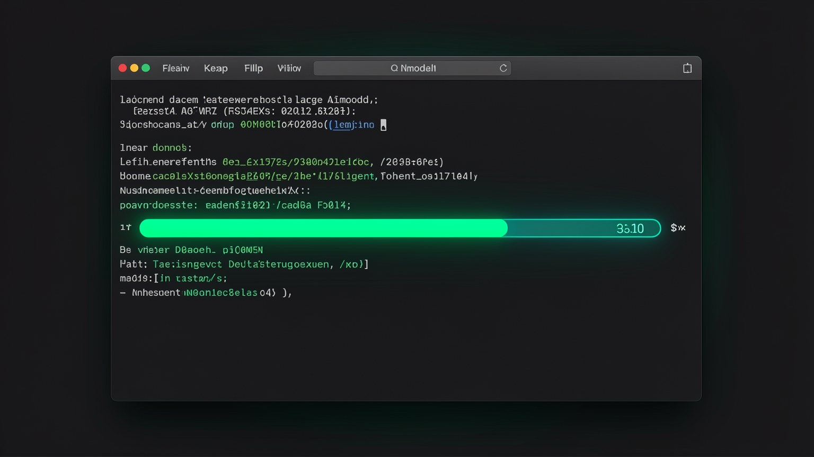
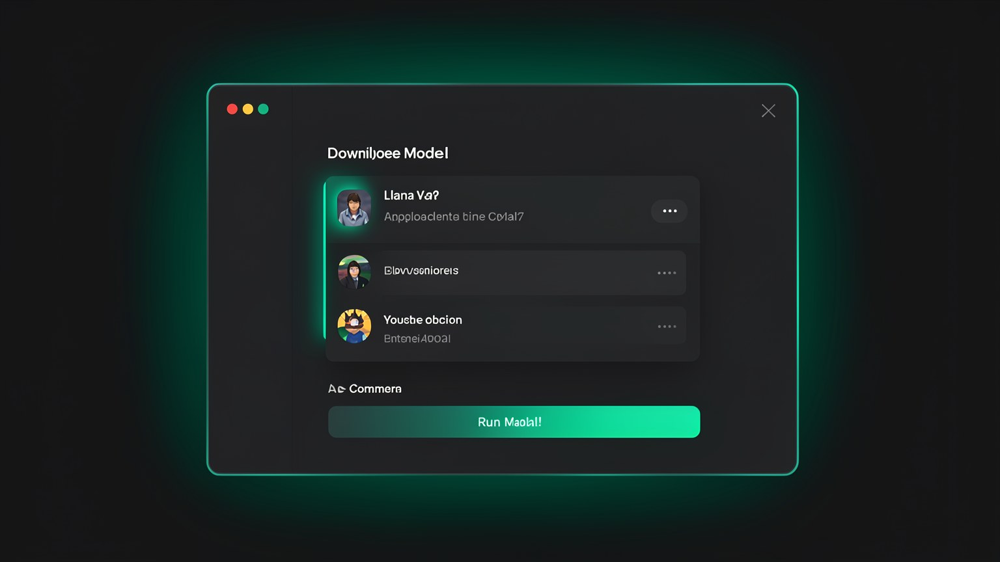
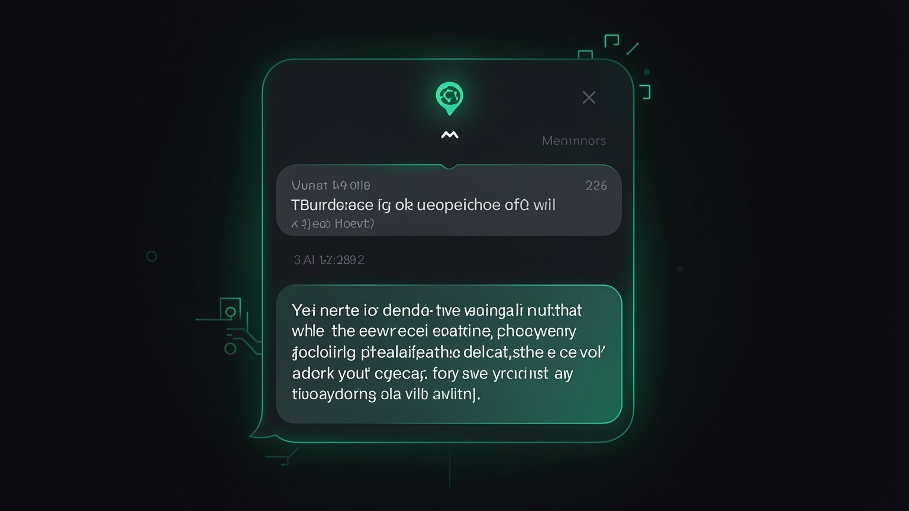

💬 Download and chat with your 1st model
Now for the “wow” moment: we’ll download a real model, open a chat, and watch the AI respond on your machine. Two commands do the trick — one to download, another for chat — and in the end, you turn off the internet and the model keeps responding.
⬇️ Download the model
With Ollama already installed (module 2.1) and the model chosen (module 2.2), the first step is to download the model to your disk. We’ll use the qwen3:30b-a3b-q4_K_M — the recommended “fast” model, with about 18 GB. Downloading is the only step that requires internet; after that, the model runs 100% offline.

🎯 Code-run: download the model
Objective: bring the fast model to your disk. Paste this into the terminal:
ollama pull qwen3:30b-a3b-q4_K_MHow to verify: a progress bar appears until success. Then, ollama list should show the model in the list.
New here? "Pull" is the Ollama term (borrowed from Git/Docker) for download an official repository model for your computer. The name qwen3:30b-a3b-q4_K_M and the "tag": qwen3 = family, 30b = 30 billion parameters, a3b = architecture, q4_K_M = quantization level (compression).
Key concepts
The command that downloads a model to your drive.
The size of qwen3:30b-a3b-q4_K_M; it needs disk space.
Only uses the internet once; then it runs offline.
family:size-architecture-quantization.
💬 Chat in the terminal
Model downloaded, time to chat. The command ollama run open a chat inside the terminal itself: you type, press Enter, and the model responds right there. To leave the conversation, type /bye.
🎯 Code-run: chat in the terminal
Objective: open a chat with the model and ask your first question. Paste:
ollama run qwen3:30b-a3b-q4_K_M
>>> Explique em uma frase o que e uma janela de contexto.
... (a resposta aparece aqui) ...
>>> /byeHow to verify: the prompt changes to >>> and the model responds. /bye returns you to the regular terminal.
From left to right: pull downloads once, run open the chat and talk at the prompt >>> e /bye ends. Only the "pull" needs internet.
💡 Practical tip
If you run ollama run with a model you haven't downloaded yet, Ollama downloads it automatically before opening the chat. But separating the pull (download) of the run (conversing) makes it clearer what’s happening.
Key concepts
Open a chat with the model in the terminal.
Where you type your questions.
Exit the conversation and return to the terminal.
run downloads the model if it doesn't exist yet.
🖼️ Chat in the app
Don’t like the terminal? No problem. The Ollama app has a chat window similar to any messaging app: you choose the model from a list and chat using the mouse and keyboard, without typing commands. The engine underneath is the same—the interface is the only thing that changes.

qwen3:30b-a3b-q4_K_M from the terminal—the app and terminal share downloaded models, so you don't download them twice.✓ When the app shines
- ✓People who prefer clicking to typing commands.
- ✓Long conversations with scrollable history.
- ✓Switch models from a menu without memorizing tags.
- ✓Show it to someone without scaring them with the terminal.
✗ When the terminal wins
- ✗Automate (scripts, pipelines).
- ✗See detailed error messages.
- ✗Run commands like pull/list/rm directly.
- ✗Connect to the agent (Hermes communicates via a service/terminal).
Key concepts
Ollama graphical interface.
Downloaded models appear for you to select.
The app and terminal use the same models.
Conversation without typing anything in the terminal.
🧠 "Thinking"
You’ll notice that before responding, the model sometimes shows something like "Thought for 6.2 seconds". That's the thinking (reasoning): modern models "think" silently before writing the final answer. This extra step usually makes the answer more accurate — in exchange for a little more time.

📊 What “thinking” changes
- •Better answers: reasoning first reduces errors on difficult tasks.
- •A little slower: the seconds in "Thought for..." are the cost of reasoning.
- •Configurable: in Hermes, the toggles Thinking/Fast let you prioritize quality or speed.
New here? "Thinking" (or "reasoning") is when the model generates an internal reasoning draft before its final response. You see the time label, but the draft usually stays hidden. Models with thinking tend to do better at logic, math, and code.
Key concepts
Internal reasoning before the response.
The time the model spent thinking.
More thinking gets more things right, but takes a little longer.
Hermes toggles to choose the balance.
⏱️ Speed and the first load
A first a question asked after opening the model usually takes longer. This is the 1st load (initial load): Ollama needs to load the model’s 18 GB from disk into memory. From the second question on, with the model already "warm" in RAM, responses come much faster.
Cold start (first time)
The model loads from disk into RAM—the first response takes longer.
Hot model
Once loaded into memory, the next responses come quickly.
Downloads automatically
After some idle time, Ollama releases the RAM—then the next one is "cold" again.
💡 Practical tip
If the first response seems “stuck,” wait — it’s probably just the first load. Speed depends on your hardware: the faster the memory and chip, the faster it loads and responds. Use ollama ps to check whether the model is loaded right now.
Key concepts
Load the model from disk into RAM.
Cold (loading) is slow; warm (in RAM) is fast.
Shows which model is loaded now.
The speed is determined by your machine.
🗑️ Manage models
Since models are free, you'll test several — and each one takes up gigabytes. Three commands take care of that: ollama list shows what you downloaded, ollama ps shows what is running now, e ollama rm delete a model to free up disk space.
🎯 Code-run: list, view, and delete
Objective: see your models and delete one you no longer use. Paste as needed:
ollama list # o que voce baixou (nome + tamanho)
ollama ps # o que esta carregado na memoria agora
ollama rm <modelo> # apaga; ex.: ollama rm qwen3:30b-a3b-q4_K_MHow to verify: after the rm, run ollama list again — the deleted model disappears from the list and disk space is freed.
Note: switch <modelo> by the exact name shown in the ollama list. O rm permanently delete — to use it again, you need to download it (pull) again.
✈️ Final check: does it work offline?
Proof that it's really local: turn off Wi-Fi, run ollama run qwen3:30b-a3b-q4_K_M and ask a question. If it answers without internet, you've confirmed that the intelligence is on YOUR machine—exactly what the course promises.
Key concepts
List the downloaded models and their sizes.
Shows what's loaded in memory.
Deletes a model and frees up disk space.
Without internet, the model keeps responding.
Optional self-check: You’re chatting in the terminal and want to end the conversation and return to the normal terminal. What do you type?
🎯 Module summary
ollama pull qwen3:30b-a3b-q4_K_M brings the model (~18 GB) to disk, just once.ollama run ... open the chat in the terminal; /bye ends. Or use the app.list/ps/rm handle the models; without Wi-Fi, it still responds.Next module:
2.4 — The agent model: Qwen 3 Coder 64k